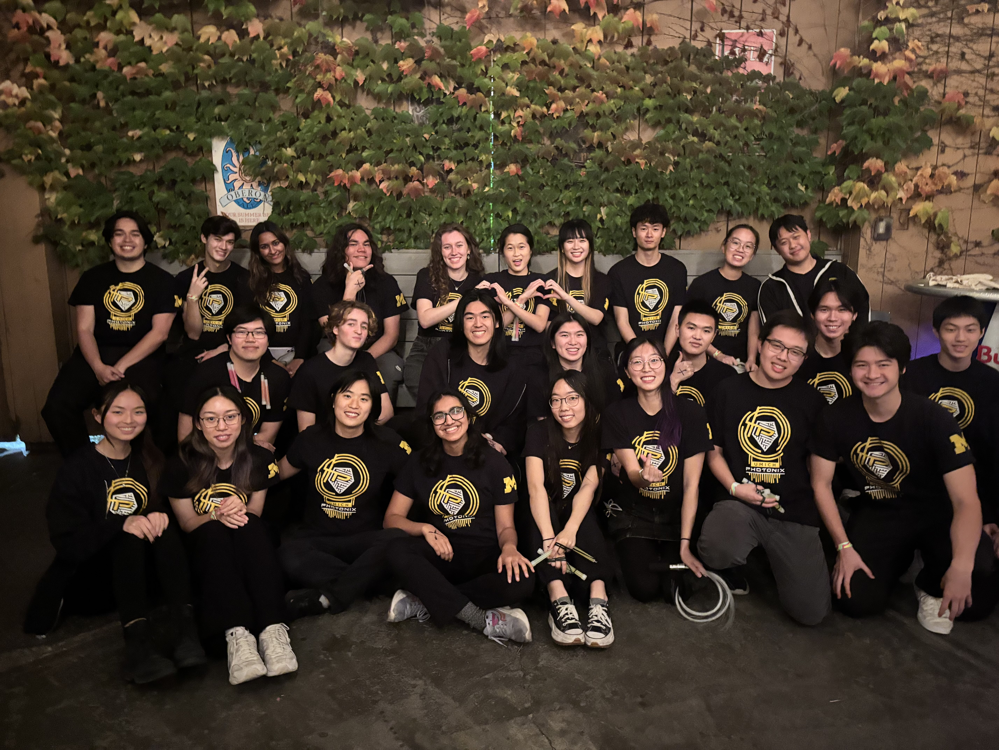
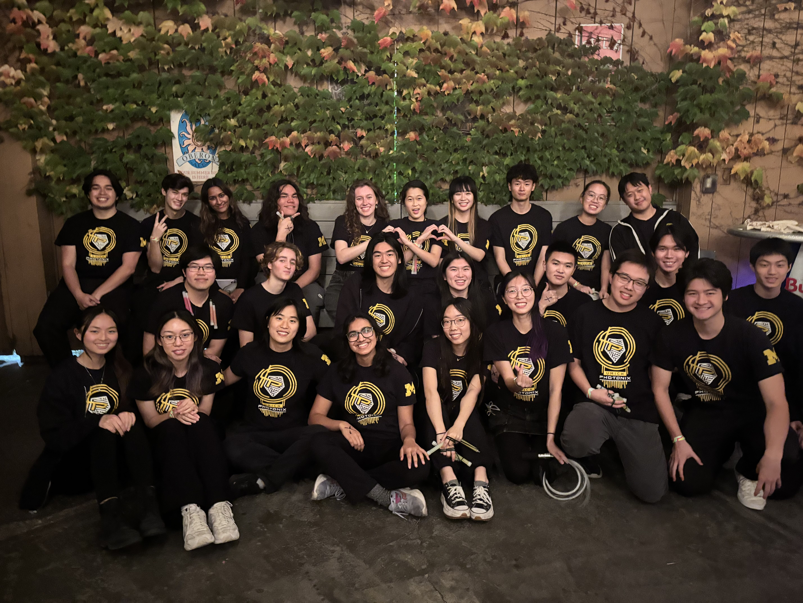

What is Yotonix?
Yotonix is an annual performance held jointly by Revolution Chinese Yoyo and Photonix at the University of Michigan.
The name: "Yotonix" comes from combining "Yoyo" and "Photonix"
Yotonix was started in the spring of 2017. Each year, it features unique choreographies from Revolution and Photonix not performed at any other performances on campus. The show also includes a hilarious skit and a collaboration between both Revolution and Photonix members, as well as a special Glowsuit set. Finally, a multitude of guest performers are invited each year.
Set List
Photonix Set 1
Revolution Set 1
Photonix Set 2
Revolution Main Set
Interweave Set
Revolution Set 2
Photonix Big Set
Glowsuit
Collab Set
AMCULT 352 Term Project:
AMCULT 352, crosslisted as ASIANPAM 352, involves the study of A/PIA cultural performances on the U-M Ann Arbor campus.
The class conducts a critical examination of collegiate culture night shows, focusing on Asian/Pacific Islander American
communities, and including processes of preparation and production as well as the content of these shows. It also performs a
discussion of the multiple levels of meaning and representation that operate in these shows.
This term project has the objective of being an original contribution to the pool of information on student-organized performance
and culture shows in UM's Asian American and Pacific Islander student communities.
Thesis:
What goes into creating Yotonix, a show created and run by performance groups? How does this contrast to what
Revolution and Photonix perform at other guest performances?
How Revolution and Photonix moved away from cultural connection, and transitioned to the performance aspect of both groups?
AMCULT 352, crosslisted as ASIANPAM 352, involves the study of A/PIA cultural performances on the U-M Ann Arbor campus. The class conducts a critical examination of collegiate culture night shows, focusing on Asian/Pacific Islander American communities, and including processes of preparation and production as well as the content of these shows. It also performs a discussion of the multiple levels of meaning and representation that operate in these shows.
This term project has the objective of being an original contribution to the pool of information on student-organized performance and culture shows in UM's Asian American and Pacific Islander student communities.
Thesis:
What goes into creating Yotonix, a show created and run by performance groups? How does this contrast to what Revolution and Photonix perform at other guest performances?
How Revolution and Photonix moved away from cultural connection, and transitioned to the performance aspect of both groups?